RGB Hearts

RGB Hearts is a must-have mod for Minecraft enthusiasts who love to customize their gaming experience. With this mod, players have the power to choose the color of their hotbar from a wide range of vibrant hues. The mod is easy to use and allows for endless customization options, allowing players to express their unique style and personality in the game. Whether you prefer a classic red, a soothing blue, or a bold neon green, RGB Hearts has got you covered. Say goodbye to boring hotbars and hello to a world of color with RGB Hearts.

RGB Hearts is a versatile and user-friendly Minecraft mod that offers a variety of exciting features. Firstly, it allows players to change the color of their hotbar to any color they desire, making their gaming experience more visually appealing and personal. The mod also includes a preview option, allowing players to preview their hotbar color before making a final decision. Whether you're a seasoned Minecraft player or a newcomer to the game, RGB Hearts is an excellent choice for anyone looking to add a touch of personality to their gameplay.
Apple, Android and Amazon Fire devices
Download the file below. Click on the rgb-hearts.mcpack file and the Minecraft Application will launch, upon launching, allow 10-15 seconds for the mod to finish importing. Then, enable the mod in "Global Resources" in your settings or "Resource Packs" to enable it in specific worlds.
PlayStation and Nintendo Switch consoles
These Consoles are currently unable to install .mcpack files. The only current method is to enable the mod on a Realm, and then join the Realm on your Console.
Xbox One and Xbox Series X|S consoles
 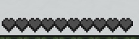
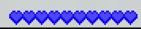
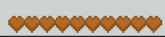
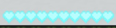
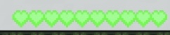
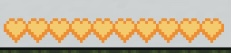
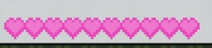
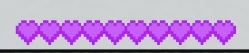
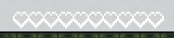
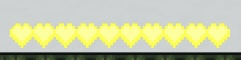
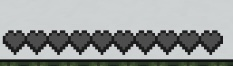
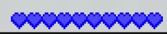
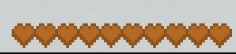
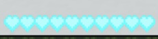
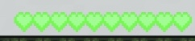
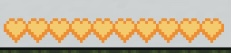
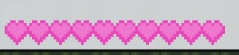
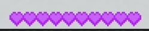
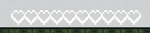
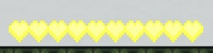

This mod will work on any device that can run Minecraft Bedrock Edition and install mods.
This mod will be compatible with any mod that does not change the heart textures.

How do I change the color?
When the pack is activated, there should be a settings icon when you click on it.

What colors are there?
There are 9 colors to choose from. Basically any color you can think of will be there.
Is there a rainbow mode?
I am planning on adding a rainbow mode soon.
This was all made by streetle.

Discord server: streetle's bedrock basement